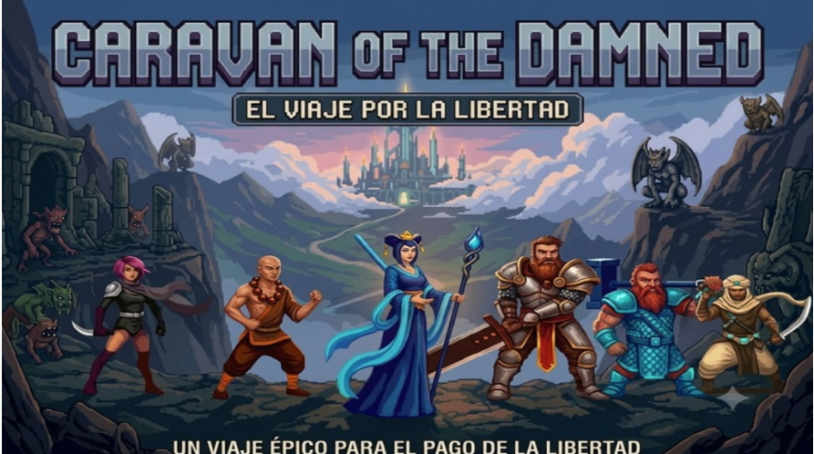

NOTICIA
Guardian continúa su desarrollo
Actualización editorial de ejemplo preparada para conectarse a la base de datos de noticias.

Esta es una vista previa visual de la página individual de noticias. En la fase de Supabase, el contenido se cargará mediante el identificador de la noticia y no quedará escrito dentro de index.html.
El diseño ya contempla título, fecha, imagen, contenido y navegación de regreso.
Volver a noticias